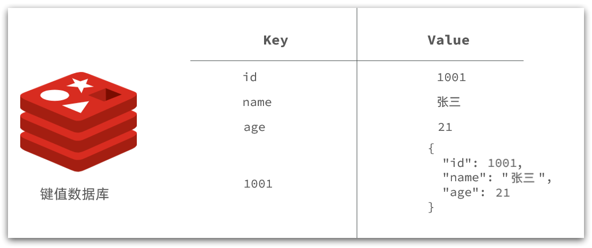
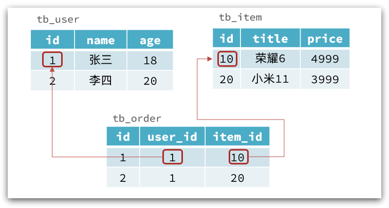
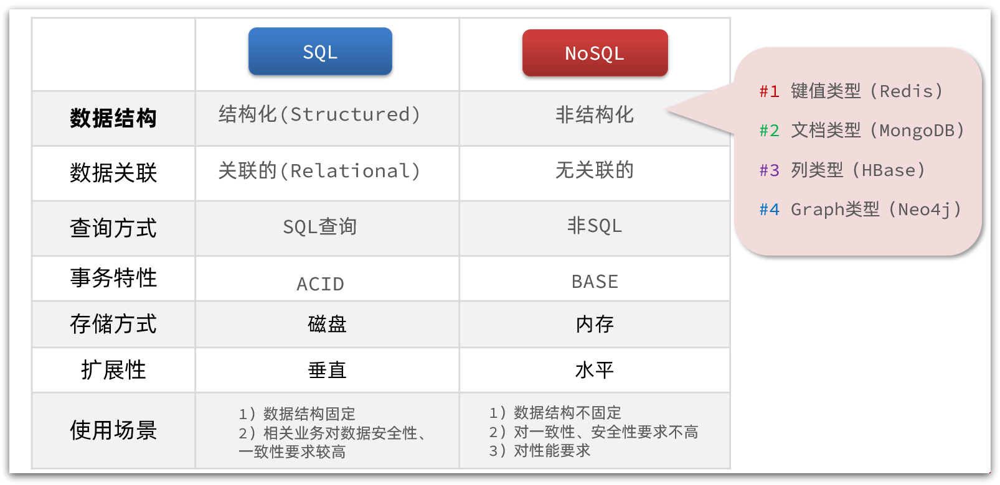
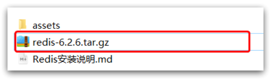
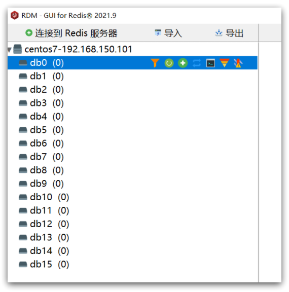

初识Redis
1.初识Redis
Redis是一种键值型的NoSql数据库，这里有两个关键字：
键值型
NoSql
其中键值型，是指Redis中存储的数据都是以key、value对的形式存储，而value的形式多种多样，可以是字符串、数值、甚至json：

而NoSql则是相对于传统关系型数据库而言，有很大差异的一种数据库。
1.1.认识NoSQL
NoSql可以翻译做Not Only Sql（不仅仅是SQL），或者是No Sql（非Sql的）数据库。是相对于传统关系型数据库而言，有很大差异的一种特殊的数据库，因此也称之为非关系型数据库。
1.1.1.结构化与非结构化
传统关系型数据库是结构化数据，每一张表都有严格的约束信息：字段名、字段数据类型、字段约束等等信息，插入的数据必须遵守这些约束：

而NoSql则对数据库格式没有严格约束，往往形式松散，自由。
可以是键值型：

也可以是文档型：

甚至可以是图格式：

1.1.2.关联和非关联
传统数据库的表与表之间往往存在关联，例如外键：

而非关系型数据库不存在关联关系，要维护关系要么靠代码中的业务逻辑，要么靠数据之间的耦合：
1 | |
此处要维护“张三”的订单与商品“荣耀”和“小米11”的关系，不得不冗余的将这两个商品保存在张三的订单文档中，不够优雅。还是建议用业务来维护关联关系。
1.1.3.查询方式
传统关系型数据库会基于Sql语句做查询，语法有统一标准；
而不同的非关系数据库查询语法差异极大，五花八门各种各样。
1.1.4.事务
传统关系型数据库能满足事务ACID的原则。

而非关系型数据库往往不支持事务，或者不能严格保证ACID的特性，只能实现基本的一致性。
1.1.5.总结
除了上述四点以外，在存储方式、扩展性、查询性能上关系型与非关系型也都有着显著差异，总结如下：

- 存储方式
- 关系型数据库基于磁盘进行存储，会有大量的磁盘IO，对性能有一定影响
- 非关系型数据库，他们的操作更多的是依赖于内存来操作，内存的读写速度会非常快，性能自然会好一些
- 扩展性
- 关系型数据库集群模式一般是主从，主从数据一致，起到数据备份的作用，称为垂直扩展。
- 非关系型数据库可以将数据拆分，存储在不同机器上，可以保存海量数据，解决内存大小有限的问题。称为水平扩展。
- 关系型数据库因为表之间存在关联关系，如果做水平扩展会给数据查询带来很多麻烦
1.2.认识Redis
Redis诞生于2009年全称是Remote Dictionary Server 远程词典服务器，是一个基于内存的键值型NoSQL数据库。
特征：
- 键值（key-value）型，value支持多种不同数据结构，功能丰富
- 单线程，每个命令具备原子性
- 低延迟，速度快（基于内存、IO多路复用、良好的编码）。
- 支持数据持久化
- 支持主从集群、分片集群
- 支持多语言客户端
作者：Antirez
Redis的官方网站地址：Redis
1.3.安装Redis
大多数企业都是基于Linux服务器来部署项目，而且Redis官方也没有提供Windows版本的安装包。因此我们会基于Linux系统来安装Redis.
此处选择的Linux版本为CentOS 7.
1.3.1.依赖库
Redis是基于C语言编写的，因此首先需要安装Redis所需要的gcc依赖：
1 | |
1.3.2.上传安装包并解压
然后将Redis安装包上传到虚拟机的任意目录：

例如，我放到了/usr/local/src 目录：

解压缩：
1 | |
解压后：

进入redis目录：
1 | |
运行编译命令：
1 | |
如果没有出错，应该就安装成功了。
默认的安装路径是在 /usr/local/bin目录下：
该目录已经默认配置到环境变量，因此可以在任意目录下运行这些命令。其中：
- redis-cli：是redis提供的命令行客户端
- redis-server：是redis的服务端启动脚本
- redis-sentinel：是redis的哨兵启动脚本
1.3.3.启动
redis的启动方式有很多种，例如：
- 默认启动
- 指定配置启动
- 开机自启
1.3.4.默认启动
安装完成后，在任意目录输入redis-server命令即可启动Redis：
1 | |
如图：

这种启动属于前台启动，会阻塞整个会话窗口，窗口关闭或者按下CTRL + C则Redis停止。不推荐使用。
1.3.5.指定配置启动
如果要让Redis以后台方式启动，则必须修改Redis配置文件，就在我们之前解压的redis安装包下（/usr/local/src/redis-6.2.6），名字叫redis.conf：

我们先将这个配置文件备份一份：
1 | |
然后修改redis.conf文件中的一些配置：
1 | |
Redis的其它常见配置：
1 | |
启动Redis：
1 | |
停止服务：
1 | |
1.3.6.开机自启
我们也可以通过配置来实现开机自启。
首先，新建一个系统服务文件：
1 | |
内容如下：
1 | |
然后重载系统服务：
1 | |
现在，我们可以用下面这组命令来操作redis了：
1 | |
执行下面的命令，可以让redis开机自启：
1 | |
1.4.Redis桌面客户端
安装完成Redis，我们就可以操作Redis，实现数据的CRUD了。这需要用到Redis客户端，包括：
- 命令行客户端
- 图形化桌面客户端
- 编程客户端
1.4.1.Redis命令行客户端
Redis安装完成后就自带了命令行客户端：redis-cli，使用方式如下：
1 | |
其中常见的options有：
-h 127.0.0.1：指定要连接的redis节点的IP地址，默认是127.0.0.1-p 6379：指定要连接的redis节点的端口，默认是6379-a 123321：指定redis的访问密码
其中的commonds就是Redis的操作命令，例如：
ping：与redis服务端做心跳测试，服务端正常会返回pong
不指定commond时，会进入redis-cli的交互控制台：

1.4.2.图形化桌面客户端
GitHub上的大神编写了Redis的图形化桌面客户端，地址：https://github.com/uglide/RedisDesktopManager
不过该仓库提供的是RedisDesktopManager的源码，并未提供windows安装包。
在下面这个仓库可以找到安装包：https://github.com/lework/RedisDesktopManager-Windows/releases
1.4.3.安装
在课前资料中可以找到Redis的图形化桌面客户端：

解压缩后，运行安装程序即可安装：

安装完成后，在安装目录下找到rdm.exe文件：

双击即可运行：

1.4.4.建立连接
点击左上角的连接到Redis服务器按钮：

在弹出的窗口中填写Redis服务信息：

点击确定后，在左侧菜单会出现这个链接：

点击即可建立连接了。

Redis默认有16个仓库，编号从0至15. 通过配置文件可以设置仓库数量，但是不超过16，并且不能自定义仓库名称。
如果是基于redis-cli连接Redis服务，可以通过select命令来选择数据库：
1 | |